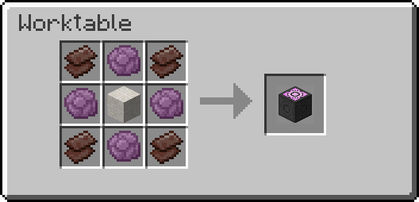

General Info
Wiki
Quartz Infuser
Description
This module adds a block that allows a wide selection of blocks (300+) to be transformed into player heads.
Download
Minecraft Version : 1.16.2+
Datapack Verison : 1.1.1
Wiki
Quartz Infuser
The Quartz Infuser is a block added by the “Quartz Infuser” datapack. It that allows a wide selection of blocks (300+) to be transformed into player heads for the low cost of some quartz.
Usage
Place a block on the ‘Quartz Infuser’ while putting quartz in it’s slot to miniaturise it. By putting 4+ Player Heads of the same block inside the slot they will transform back.
Recipe
This item is crafted inside the Worktable present in all the modules on this site.